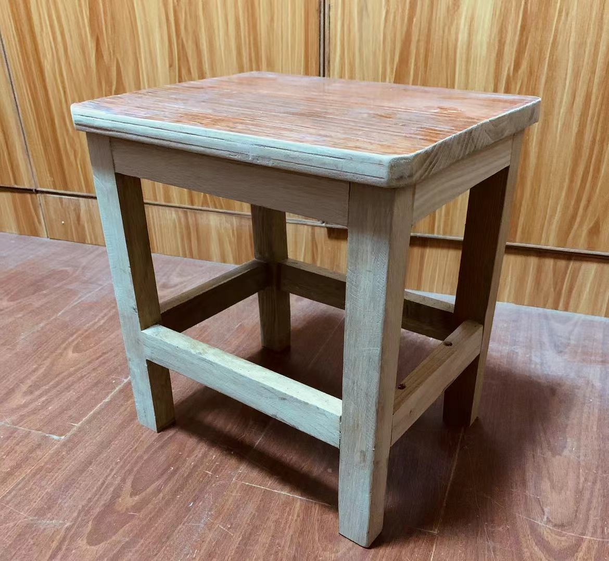

Let's make a stool ! !
Draw draft papers
We have a lot of untreated wood materials here.

Let’s sort them by length and thickness.
Use a 2B pencil and a steel ruler to mark where we need to cut or carve
Then...let’s get to work!
Cut off the excess wood so that all pieces of the same type are the same length.
Use a power drill to remove most of the material where we need to carve.
Take a chisel to tidy up the edges of the carved areas.
Make sure all the joints and notches are done.
Oops! The joints won’t fit together.
Let’s sand and adjust them a bit.
Now, assemble everything and use a stapler to secure them in place.
And… we’re done!
